DeepSeek-AI
近期，以 Hyper-Connections（HC）为代表的研究，通过扩展 residual stream 宽度并使连接模式多样化，拓展了过去十年确立并被广泛采用的残差连接范式。尽管带来了显著的性能提升，这种多样化却从根本上破坏了残差连接固有的恒等映射性质，造成严重的训练不稳定和受限的可扩展性，同时还引入了显著的内存访问开销。为应对这些挑战，我们提出 Manifold-Constrained Hyper-Connections（mHC），这是一个通用框架，将 HC 的残差连接空间投影到特定流形上，以恢复恒等映射性质，并结合严谨的基础设施优化来保证效率。实证实验表明，mHC 能够有效支持大规模训练，带来切实的性能改进和更优的可扩展性。我们期待 mHC 作为 HC 的一种灵活而实用的扩展，能够促进对拓扑架构设计的深入理解，并为基础模型的演进指明有前景的方向。
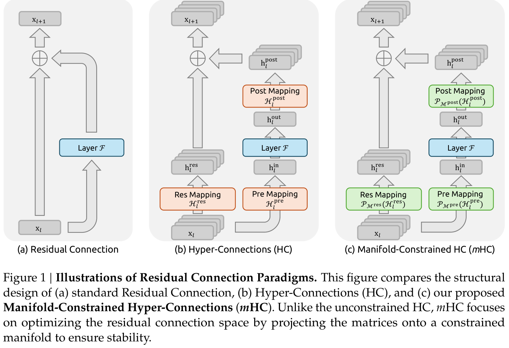
*核心贡献者。†通讯作者：xie.zhenda@deepseek.com
自 ResNet（He et al., 2016a）问世以来，深度神经网络架构经历了快速演进。如图 1(a) 所示，单层的结构可以表述如下：
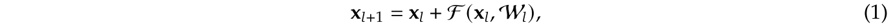
其中，\(x_{l}\) 和 \(x_{l+1}\) 分别表示第 \(l\) 层的 \(C\) 维输入和输出，\(\mathcal{F}\) 表示残差函数。尽管过去十年中残差函数 \(\mathcal{F}\) 已经演进，涵盖卷积、attention 机制和 FFN 等各种运算，但残差连接范式始终保持其原始形式。伴随 Transformer（Vaswani et al., 2017）架构的发展，这一范式如今已成为 LLM 的基础设计要素（Brown et al., 2020; Liu et al., 2024b; Touvron et al., 2023）。
这种成功主要归功于残差连接的简洁形式。更重要的是，早期研究（He et al., 2016b）表明，残差连接的恒等映射性质能够在大规模训练中维持稳定性和效率。将残差连接递归地扩展到多个层，式 (1) 可得：
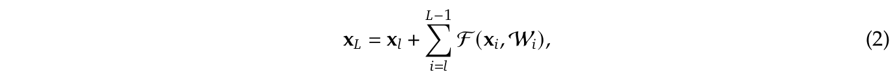
其中，\(L\) 和 \(l\) 分别对应较深层和较浅层。恒等映射一词指的是 \(x_{l}\) 这一分量本身，强调较浅层的信号无需任何修改便可直接映射到较深层的性质。
近期，以 Hyper-Connections（HC）（Zhu et al., 2024）为代表的研究，为残差连接引入了新的维度，并通过实证展示了其性能潜力。HC 的单层架构如图 1(b) 所示。通过扩展 residual stream 的宽度并增强连接的复杂性，HC 显著提升了拓扑复杂性，而不改变单个计算单元以 FLOPs 衡量的计算开销。形式上，HC 的单层传播定义为：
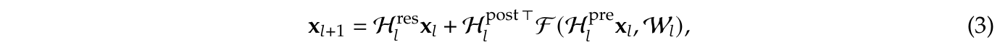
其中，\(x_{l}\) 和 \(x_{l+1}\) 分别表示第 \(l\) 层的输入和输出。与式 (1) 的表述不同，\(x_{l}\) 和 \(x_{l+1}\) 的特征维度从 \(C\) 扩展为 \(n \times C\)，其中 \(n\) 是扩展率。\(H^{res}_{l} \in \mathbb{R} ^{n\times n}\) 表示在 residual stream 内混合特征的可学习映射。同样作为可学习映射，\(H^{pre}_{l} \in \mathbb{R} ^{1\times n}\) 将 \(nC\) 维流的特征聚合为 \(C\) 维层输入；反过来，\(H^{post}_{l} \in \mathbb{R} ^{1\times n}\) 将层输出映射回 residual stream。
然而，随着训练规模增大，HC 引入了潜在的不稳定风险。首要问题在于，当架构扩展到多个层时，HC 的无约束性破坏了恒等映射性质。在包含多个并行流的架构中，理想的恒等映射充当守恒机制，确保各流的平均信号强度在前向和反向传播过程中均保持不变。通过式 (3) 将 HC 递归扩展到多个层，可得：
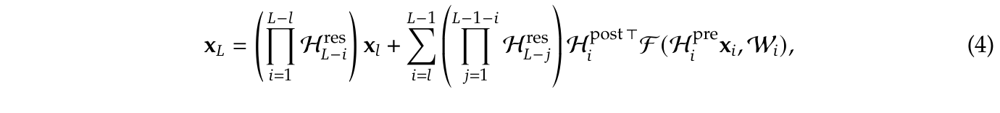
式 (4) 的说明接下一页。
接上一页式 (4)。
其中，\(L\) 和 \(l\) 分别表示较深层和较浅层。与式 (2) 相比，HC 中的复合映射 \(\prod _{i=1}^{L-l} H^{res}_{L-i}\) 无法保持特征的全局均值。这一差异导致信号被无界放大或衰减，从而引发大规模训练中的不稳定性。另一个需要考虑的问题是，虽然 HC 在 FLOPs 层面保持了计算效率，但原始设计并未解决加宽 residual stream 的内存访问成本所涉及的硬件效率问题。这些因素共同限制了 HC 的实际可扩展性，并阻碍其在大规模训练中的应用。
为应对这些挑战，我们提出 mHC，如图 1(c) 所示。这是一个通用框架，将 HC 的残差连接空间投影到特定流形上，以恢复恒等映射性质，同时结合严谨的基础设施优化来保证效率。具体而言，mHC 使用 Sinkhorn-Knopp 算法（Sinkhorn and Knopp, 1967），以熵投影的方式将 \(H^{res}_{l}\) 投影到 Birkhoff 多胞体上。这一操作有效地将残差连接矩阵约束在由双随机矩阵构成的流形内。由于这些矩阵的行和与列和均等于 1，运算 \(H^{res}_{l}x_{l}\) 相当于输入特征的凸组合。这一特性有助于实现良态的信号传播，使特征均值守恒，并对信号范数进行严格约束，从而有效降低信号消失或爆炸的风险。此外，由于双随机矩阵在矩阵乘法下具有封闭性，复合映射 \(\prod _{i=1}^{L-l} H^{res}_{L-i}\) 也保留了这一守恒性质。因此，mHC 有效地维持了任意深度之间恒等映射的稳定性。为保证效率，我们采用内核融合，并利用 TileLang（Wang et al., 2025）开发混合精度内核。此外，我们通过选择性重计算降低内存占用，并在 DualPipe 调度（Liu et al., 2024b）中精心安排通信重叠。
大量语言模型预训练实验表明，mHC 在保持 HC 性能优势的同时，展现出卓越的稳定性和可扩展性。内部大规模训练表明，mHC 能够支持大规模训练，并且在扩展率 \(n = 4\) 时仅引入 6.7% 的额外时间开销。
深度学习中的架构进展主要可分为微观设计和宏观设计。微观设计关注计算块的内部架构，规定如何沿空间、时间和通道维度处理特征。宏观设计则确立块之间的拓扑结构，从而决定特征表示如何在不同层之间传播、路由和合并。
受参数共享和平移不变性的推动，卷积最初主导了结构化信号的处理。虽然随后的深度可分离卷积（Chollet, 2017）和分组卷积（Xie et al., 2017）等变体优化了效率，但 Transformer（Vaswani et al., 2017）的出现使 attention 和 FFN 成为现代架构的基础构建块。Attention 机制促进全局信息传播，而 FFN 则增强单个特征的表示能力。为平衡性能与 LLM 的计算需求，attention 机制已向 MQA（Shazeer, 2019）、GQA（Ainslie et al., 2023）和 MLA 等高效变体演进（接下一页）
接上一页“MLA”。
（MLA）（Liu et al., 2024a）。与此同时，FFN 已通过 MoE（Fedus et al., 2022; Lepikhin et al., 2020; Shazeer et al., 2017）推广为稀疏计算范式，使参数规模能够大幅扩展，而计算成本无需按比例增长。
宏观设计支配网络的全局拓扑结构（Srivastava et al., 2015）。继 ResNet（He et al., 2016a）之后，DenseNet（Huang et al., 2017）和 FractalNet（Larsson et al., 2016）等架构分别通过密集连接和多路径结构增加拓扑复杂性，以提升性能。Deep Layer Aggregation（DLA）（Yu et al., 2018）进一步通过递归聚合不同深度和分辨率的特征，拓展了这一范式。
最近，宏观设计的重点转向扩展 residual stream 的宽度（Chai et al., 2020; Fang et al., 2023; Heddes et al., 2025; Mak and Flanigan, 2025; Menghani et al., 2025; Pagliardini et al., 2024; Xiao et al., 2025; Xie et al., 2023; Zhu et al., 2024）。Hyper-Connections（HC）（Zhu et al., 2024）引入可学习矩阵，调节不同深度特征之间的连接强度，而 Residual Matrix Transformer（RMT）（Mak and Flanigan, 2025）用外积记忆矩阵替代标准 residual stream，以便存储特征。类似地，MUDDFormer（Xiao et al., 2025）采用多路动态密集连接来优化跨层信息流。尽管具有潜力，这些方法却破坏了残差连接固有的恒等映射性质，从而引入不稳定性并阻碍可扩展性。此外，由于特征宽度增大，它们还带来了显著的内存访问开销。在 HC 的基础上，所提出的 mHC 将残差连接空间限制到特定流形上，以恢复恒等映射性质，同时结合严谨的基础设施优化来保证效率。这种方法在保留扩展连接的拓扑优势的同时，提高了稳定性和可扩展性。
首先，我们确立本文使用的记号。在 HC 的表述中，第 \(l\) 层的输入 \(x_{l} \in \mathbb{R} ^{1\times C}\) 被扩展 \(n\) 倍，以构造隐藏矩阵 \(x_{l} = (x^{\top}_{l,0}, \ldots , x^{\top}_{l,n-1})^{\top} \in \mathbb{R} ^{n\times C}\)，它可视为 \(n\) 路 residual stream。这一操作有效地拓宽了 residual stream 的宽度。为控制该流的读出、写入和更新过程，HC 引入三个可学习的线性映射：\(H^{pre}_{l}\)、\(H^{post}_{l} \in \mathbb{R} ^{1\times n}\)，以及 \(H^{res}_{l} \in \mathbb{R} ^{n\times n}\)。这些映射修改了式 (1) 所示的标准残差连接，得到式 (3) 给出的表述。
在 HC 的表述中，可学习映射由两部分系数组成：依赖输入的部分和全局部分，分别称为动态映射和静态映射。形式上，HC 按以下方式计算系数：
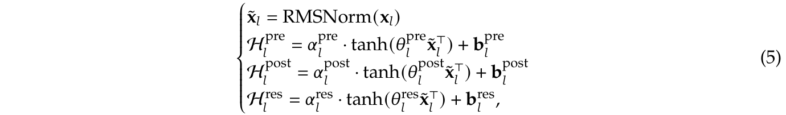
其中，RMSNorm(·)（Zhang and Sennrich, 2019）应用于最后一个维度，标量 \(\alpha ^{pre}_{l}\)、\(\alpha ^{post}_{l}\) 和 \(\alpha ^{res}_{l} \in \mathbb{R}\) 是初始化为较小值的可学习门控因子。动态映射（接下一页）
接上一页“动态映射”。
通过由 \(\theta ^{pre}_{l}\)、\(\theta ^{post}_{l} \in \mathbb{R} ^{1\times C}\) 和 \(\theta ^{res}_{l} \in \mathbb{R} ^{n\times C}\) 参数化的线性投影得到，而静态映射则由可学习偏置 \(b^{pre}_{l}\)、\(b^{post}_{l} \in \mathbb{R} ^{1\times n}\) 和 \(b^{res}_{l} \in \mathbb{R} ^{n\times n}\) 表示。
值得注意的是，引入这些映射——\(H^{pre}_{l}\)、\(H^{post}_{l}\) 和 \(H^{res}_{l}\)——带来的计算开销可以忽略不计，因为典型的扩展率 \(n\)（例如 4）远小于输入维度 \(C\)。通过这一设计，HC 有效地将 residual stream 的信息容量与层的输入维度解耦，而后者与模型的计算复杂度（FLOPs）高度相关。因此，HC 提供了一条通过调整 residual stream 宽度进行扩展的新途径，补充了预训练 scaling laws（Hoffmann et al., 2022）中讨论的模型 FLOPs 和训练数据规模这两个传统扩展维度。
尽管 HC 需要三个映射来处理 residual stream 与层输入之间的维度不匹配，但表 1 中的初步实验表明，残差映射 \(H^{res}_{l}\) 带来的性能提升最为显著。这一发现强调了 residual stream 内部有效信息交换的关键重要性。
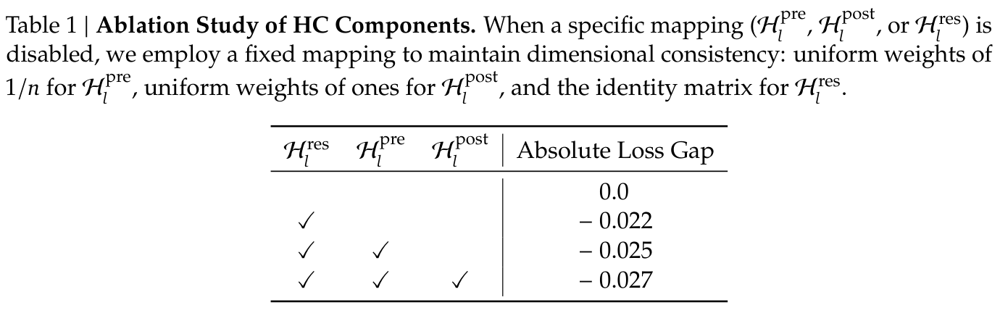
虽然残差映射 \(H^{res}_{l}\) 对性能至关重要，但依次应用它会对数值稳定性构成显著风险。如式 (4) 所详述，当 HC 扩展到多个层时，从第 \(l\) 层到第 \(L\) 层的有效信号传播由复合映射 \(\prod _{i=1}^{L-l} H^{res}_{L-i}\) 支配。由于可学习映射 \(H^{res}_{l}\) 不受约束，这一复合映射不可避免地偏离恒等映射。因此，信号幅度在前向传播和反向传播中都容易爆炸或消失。这种现象破坏了残差学习依赖畅通信号流的基本前提，从而使更深或更大规模模型的训练过程变得不稳定。
实证证据支持这一分析。我们在大规模实验中观察到不稳定的损失行为，如图 2 所示。以 mHC 为基准，HC 在约 12k 步时出现意料之外的损失骤增，这与 gradient 范数的不稳定高度相关。此外，对 \(H^{res}_{l}\) 的分析验证了这种不稳定性的机制。为量化复合映射 \(\prod _{i=1}^{L-l} H^{res}_{L-i}\) 如何沿 residual stream 放大信号，我们采用两个指标。第一个指标基于复合映射行和的最大绝对值，刻画前向传播中最坏情况下的放大。第二个指标基于列和的最大绝对值，对应反向传播。我们将这些指标称为复合映射的 Amax 增益幅度。如图 3(b) 所示，Amax 增益幅度出现极端值，峰值达到 3000，与 1 相差悬殊，证实了 residual stream 爆炸的存在。
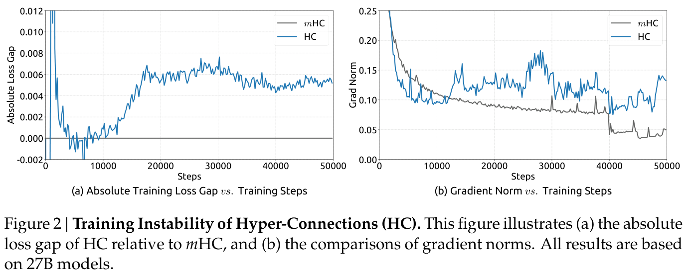
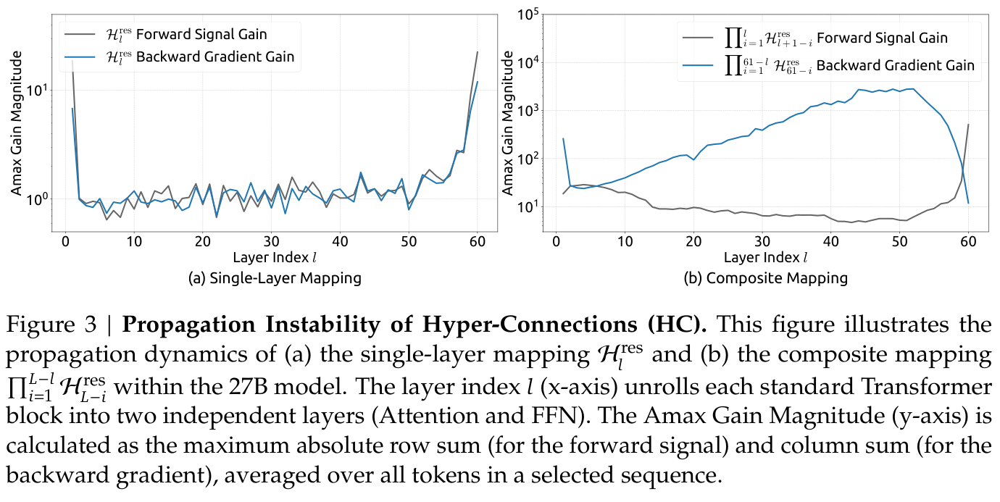
虽然额外映射的线性性质使 HC 的计算复杂度仍然可控，但系统层面的开销构成了不容忽视的挑战。具体而言，内存访问（I/O）成本往往是现代模型架构的主要瓶颈之一，通常被称为“内存墙”（Dao et al., 2022）。这一瓶颈在架构设计中经常被忽视，却对运行效率有决定性的影响。
针对广泛采用的 pre-norm Transformer（Vaswani et al., 2017）架构，我们分析 HC 固有的 I/O 模式。表 2 总结了 \(n\) 路 residual stream 设计在单个残差层中引入的每 token 内存访问开销。分析表明，HC 将内存访问成本提高了一个与 \(n\) 近似成正比的倍数。如果没有融合内核加以缓解，这种过量的 I/O 需求会显著降低训练吞吐量。此外，由于 \(H^{pre}_{l}\)、\(H^{post}_{l}\) 和 \(H^{res}_{l}\) 涉及可学习参数，它们的中间激活需要用于反向传播。这会大幅增加 GPU 内存占用，通常需要gradientcheckpoint才能维持可行的内存用量。另外，HC 在 PP（Qi et al., 2024）中需要 \(n\) 倍的通信成本，导致更大的气泡并降低训练吞吐量。
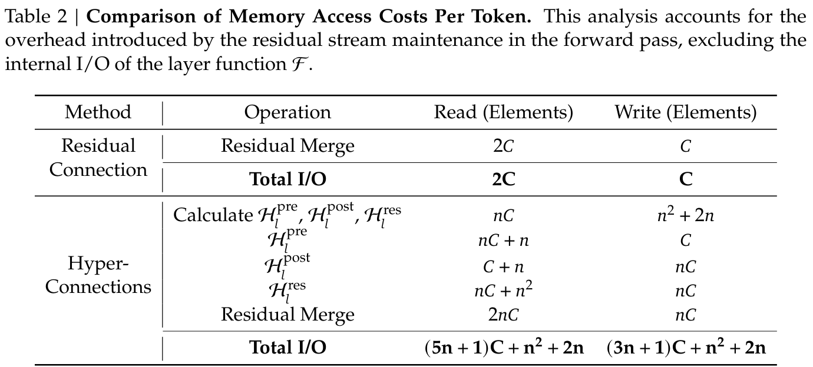
受恒等映射原则（He et al., 2016b）启发，mHC 的核心前提是将残差映射 \(H^{res}_{l}\) 约束到特定流形上。虽然原始恒等映射通过强制 \(H^{res}_{l} = I\) 来保证稳定性，但它从根本上排除了 residual stream 内部的信息交换，而这种交换对于充分发挥多流架构的潜力至关重要。因此，我们提出将残差映射投影到一个流形上，使其既维持跨层信号传播的稳定性，又促进 residual stream 之间的相互作用，从而保持模型的表达能力。为此，我们限制 \(H^{res}_{l}\) 为双随机矩阵，即元素非负、每一行和每一列的和均为 1 的矩阵。形式上，以 \(\mathcal{M} ^{res}\) 表示双随机矩阵的流形（亦称 Birkhoff 多胞体）。我们将 \(H^{res}_{l}\) 约束为 \(\mathcal{P} _{\mathcal{M} res}(H^{res}_{l})\)，定义为：
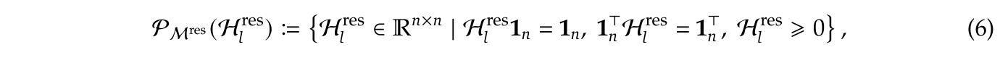
其中，\(\mathbf{1}_{n}\) 表示 \(n\) 维全 1 向量。
值得注意的是，当 \(n = 1\) 时，双随机条件退化为标量 1，从而恢复原始恒等映射。选择双随机性带来了若干有益于大规模模型训练的严格理论性质：
接上一页第 3 项“通过 Birkhoff 多胞体进行几何解释”。
各流之间的信息混合，从而有效地充当一种稳健的特征融合机制。
此外，我们对输入映射 \(H^{pre}_{l}\) 和输出映射 \(H^{post}_{l}\) 施加非负约束。该约束防止正负系数组合引起的信号抵消，也可视为一种特殊的流形投影。
本节详细介绍 mHC 中 \(H^{pre}_{l}\)、\(H^{post}_{l}\) 和 \(H^{res}_{l}\) 的计算过程。给定第 \(l\) 层的输入隐藏矩阵 \(x_{l} \in \mathbb{R} ^{n\times C}\)，我们首先将其展平为向量 \(\vec{x}_{l} = vec(x_{l}) \in \mathbb{R} ^{1\times nC}\)，以保留完整的上下文信息。随后，我们遵循原始 HC 的表述，按以下方式得到动态映射和静态映射：
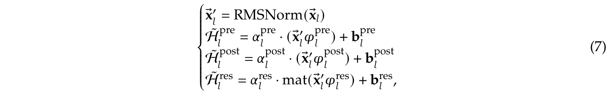
其中，\(\varphi ^{pre}_{l}\)、\(\varphi ^{post}_{l} \in \mathbb{R} ^{nC\times n}\) 和 \(\varphi ^{res}_{l} \in \mathbb{R} ^{nC\times n^{2}}\) 是动态映射的线性投影，\(\operatorname{mat}(\cdot)\) 是从 \(\mathbb{R} ^{1\times n^{2}}\) 到 \(\mathbb{R} ^{n\times n}\) 的形状重排函数。
然后，通过以下方式获得最终的受约束映射：
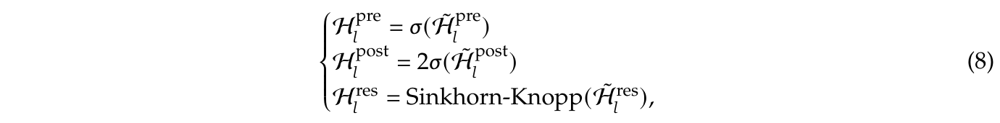
其中，\(\sigma (\cdot )\) 表示 Sigmoid 函数。Sinkhorn-Knopp(·) 算子首先通过指数运算使所有元素为正，然后进行迭代归一化，交替缩放各行和各列，使其和为 1。具体而言，以正矩阵 \(M^{(0)} = exp(\tilde{H}^{res}_{l})\) 为起点，归一化迭代按以下方式进行：
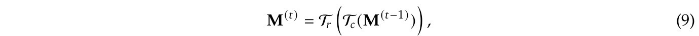
其中，\(\mathcal{T} _{r}\) 和 \(\mathcal{T} _{c}\) 分别表示行归一化和列归一化。当 \(t_{max} \to \infty\) 时，这一过程收敛到双随机矩阵 \(H^{res}_{l} = M^{(tmax)}\)。在实验中，我们选择 \(t_{max} = 20\) 作为实用取值。
本节详细介绍为 mHC 量身设计的基础设施。通过严谨的优化，我们在大规模模型中实现了 mHC（\(n = 4\)），仅带来 6.7% 的少量训练开销。
我们观察到，当 RMSNorm 作用于高维隐藏状态 \(\vec{x}_{l} \in \mathbb{R} ^{1\times nC}\) 时，会产生显著延迟，因此将除以范数的运算调整到（接下一页）
接上一页“将除以范数的运算调整到”。
矩阵乘法之后。这一优化在保持数学等价性的同时提升了效率。此外，我们采用混合精度策略，在不牺牲速度的情况下尽可能提高数值精度，并将共享内存访问的多个运算融合为统一的计算内核，以减少内存带宽瓶颈。基于式 (10)–(13) 中详述的输入和参数，我们实现了三个专门的 mHC 内核来计算 \(H^{pre}_{l}\)、\(H^{post}_{l}\) 和 \(H^{res}_{l}\)。在这些内核中，偏置和线性投影分别合并为 \(b_{l}\) 和 \(\varphi _{l}\)，RMSNorm 的权重也被吸收到 \(\varphi _{l}\) 中。
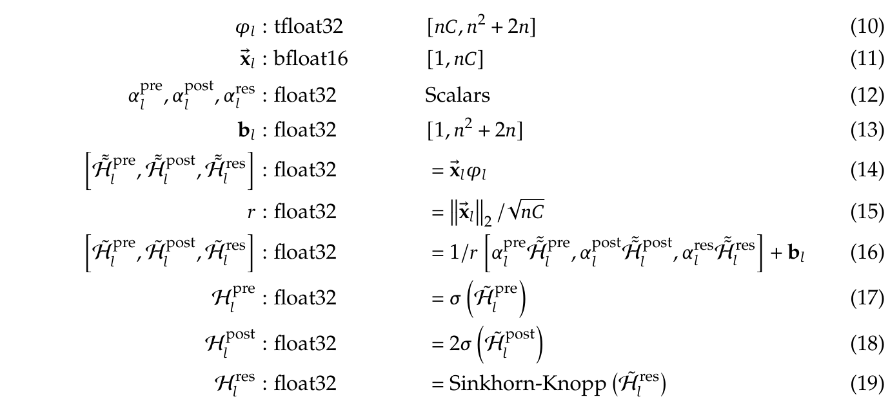
利用上述内核得到的系数，我们引入另外两个内核来应用这些映射：一个用于 \(\mathcal{F} _{pre}\) ≔ \(H^{pre}_{l}x_{l}\)，另一个用于 \(\mathcal{F} _{post,res}\) ≔ \(H^{res}_{l}x_{l} + H^{post \top}_{l}\mathcal{F} (\cdot , \cdot )\)。通过将 \(H^{post}_{l}\) 和 \(H^{res}_{l}\) 的应用与残差合并融合，我们把该内核读取的元素数从 \((3n + 1)C\) 降到 \((n + 1)C\)，将写入的元素数从 \(3nC\) 降到 \(nC\)。我们使用 TileLang（Wang et al., 2025）高效实现了大多数内核（式 (14)–(15) 除外）。这一框架简化了具有复杂计算过程的内核实现，使我们能够用极少的工程投入充分利用内存带宽。
\(n\) 路 residual stream 设计在训练过程中引入了显著的内存开销。为缓解这一问题，我们在前向传播后丢弃 mHC 内核的中间激活，并在反向传播中通过重新执行 mHC 内核来即时重计算这些激活（接下一页）
接上一页的重计算说明。
而不执行计算量较大的层函数 \(\mathcal{F}\)。因此，对于包含 \(L_{r}\) 个连续层的块，我们只需保存第一层的输入 \(x_{l_{0}}\)。忽略轻量系数，同时计入 \(\mathcal{F}\) 内部的前置归一化后，表 3 总结了为反向传播保留的中间激活。
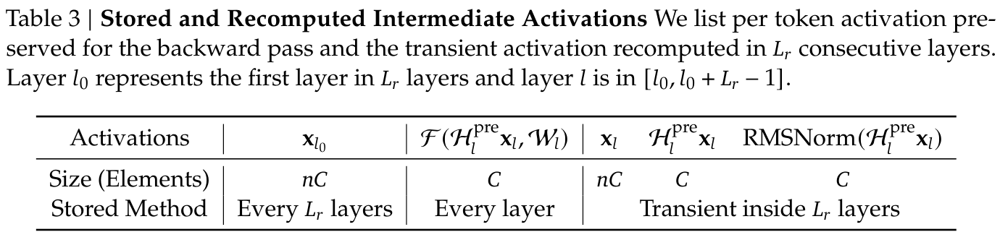
由于 mHC 内核重计算以 \(L_{r}\) 个连续层组成的块为单位执行，对于总共 \(L\) 层，我们必须为反向传播持久保存所有 \(\lceil L/L_{r}\rceil\) 个块的第一层输入 \(x_{l_{0}}\)。除这部分常驻内存外，重计算过程还为当前活动块引入了 \((n + 2)C \times L_{r}\) 个元素的临时内存开销，这决定了反向传播时的峰值内存用量。因此，我们通过最小化与 \(L_{r}\) 对应的总内存占用，确定最优块大小 \(L_{r}^{*}\)：
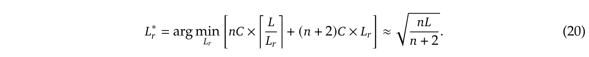
此外，大规模训练中的 PP 还施加了一项约束：重计算块不能跨越流水线阶段边界。我们观察到，理论最优值 \(L_{r}^{*}\) 通常与每个流水线阶段的层数接近，因此选择将重计算边界与流水线阶段对齐。
在大规模训练中，PP 是降低参数和 gradient 内存占用的标准做法。具体而言，我们采用 DualPipe 调度（Liu et al., 2024b），它能有效地重叠横向扩展互连上的通信流量，例如 EP 和 PP 中的通信。然而，相比单流设计，mHC 所提出的 \(n\) 路 residual stream 在流水线阶段之间带来了显著的通信延迟。此外，在阶段边界处，对全部 \(L_{r}\) 层进行 mHC 内核重计算会引入不可忽略的计算开销。为解决这些瓶颈，我们扩展了 DualPipe 调度（见图 4），以改善流水线阶段边界处通信与计算的重叠。
特别地，为避免阻塞通信流，我们将 MLP（即 FFN）层的 \(\mathcal{F} _{post,res}\) 内核放在专用的高优先级计算流上执行。我们还避免对 attention 层中的长时间运算使用持久化内核，从而防止长时间停顿。这一设计允许抢占重叠执行的 attention 计算，在维持计算设备处理单元高利用率的同时，实现灵活调度。此外，由于每个阶段的初始激活 \(x_{l_{0}}\) 已经在本地缓存，重计算过程与流水线通信依赖解耦。
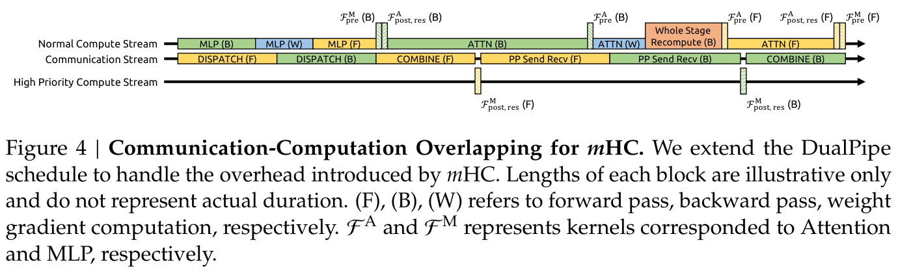
我们通过语言模型预训练验证所提出的方法，对基线、HC 和我们提出的 mHC 进行比较分析。采用受 DeepSeek-V3（Liu et al., 2024b）启发的 MoE 架构，我们训练了四种不同的模型变体，以覆盖不同的评估设置。具体而言，HC 和 mHC 的扩展率 \(n\) 均设为 4。我们主要关注一个使用与其参数量成比例的数据集训练的 27B 模型，它是系统层面主要结果的评估对象。在此基础上，我们加入使用成比例数据训练的较小 3B 和 9B 模型，分析计算量扩展行为，从而观察不同计算量下的性能趋势。此外，为专门研究 token 扩展行为，我们在包含 1 万亿 token 的固定语料上训练了一个单独的 3B 模型。详细模型配置和训练超参数见附录 A.1。
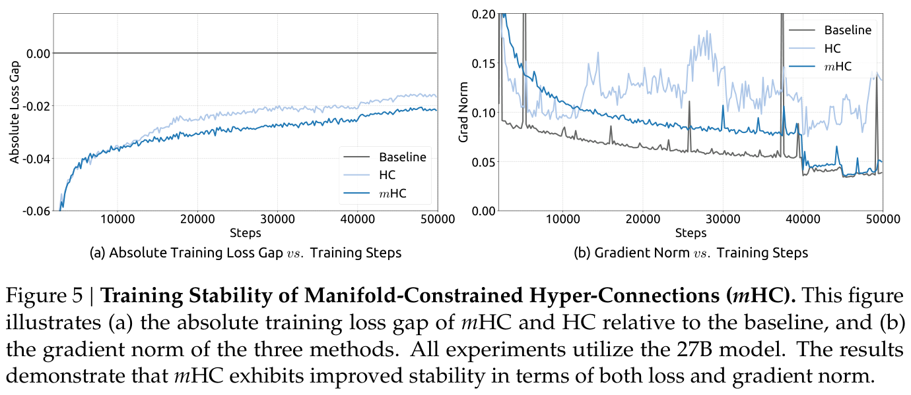
首先，我们考察 27B 模型的训练稳定性和收敛情况。如图 5(a) 所示，mHC 有效缓解了 HC 中观察到的训练不稳定性，最终损失相较基线降低了 0.021。图 5(b) 的 gradient 范数分析进一步证实了这种稳定性改进：mHC 的表现明显优于 HC，并维持了与基线相当的稳定状态。
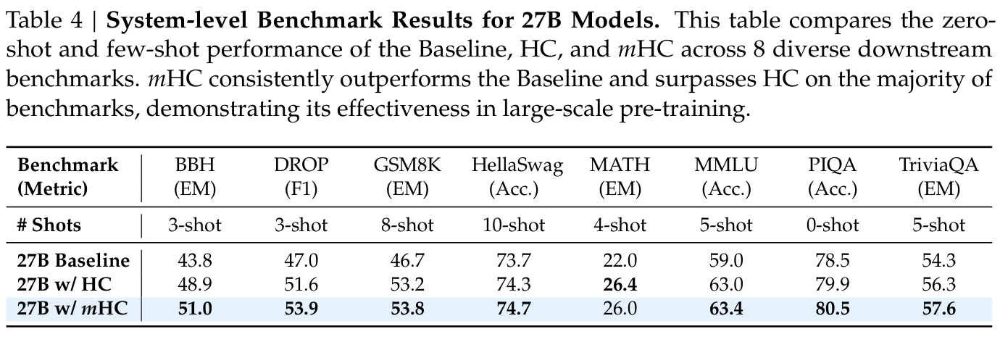
表 4 展示了在一组多样化基准上的下游性能（Bisk et al., 2020; Cobbe et al., 2021; Hendrycks et al., 2020, 2021; Joshi et al., 2017; Zellers et al., 2019）。mHC 带来了全面改进，始终优于基线，并在大多数任务上超过 HC。特别是，相较 HC，mHC 进一步增强了模型的推理能力，在 BBH（Suzgun et al., 2022）和 DROP（Dua et al., 2019）上分别带来 2.1% 和 2.3% 的性能提升。
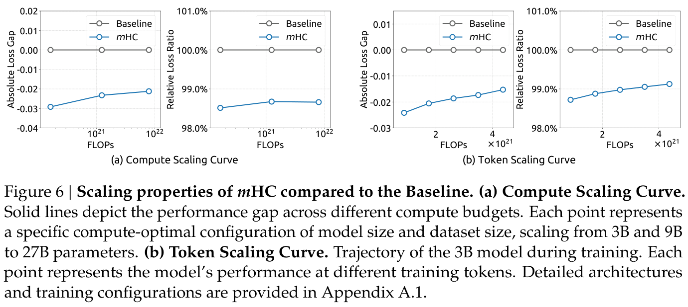
为评估我们方法的可扩展性，我们报告了不同规模下 mHC 相较基线的相对损失改进。在图 6(a) 中，我们绘制了覆盖 3B、9B 和 27B 参数量的计算量扩展曲线。曲线走势表明，即使在更高的计算预算下，性能优势也能稳健保持，仅有轻微减弱。此外，我们在图 6(b) 中考察单次训练内部的动态变化，其中展示了 3B 模型的 token 扩展曲线。这些发现共同验证了 mHC 在大规模场景中的有效性。我们的内部大规模训练实验进一步支持了这一结论。
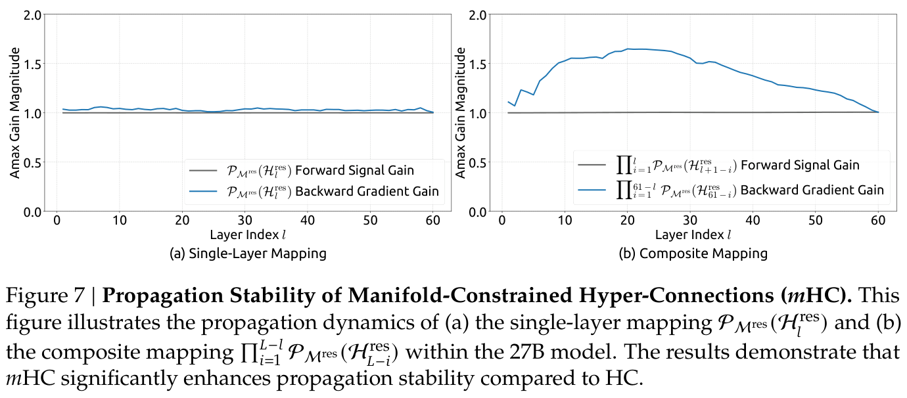
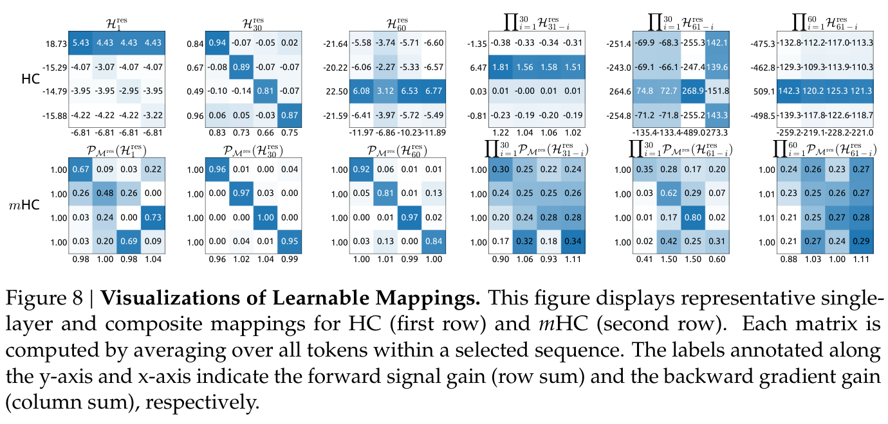
与图 3 类似，图 7 展示了 mHC 的传播稳定性。理想情况下，单层映射满足双随机约束，意味着前向信号增益和反向 gradient 增益都应等于 1。然而，为实现计算效率，采用 Sinkhorn-Knopp 算法的实际实现必须限制迭代次数。在我们的设置中，使用 20 次迭代获得近似解。因此，如图 7(a) 所示，反向 gradient 增益略微偏离 1。在图 7(b) 所示的复合情形中，偏差增大但仍有界，最大值约为 1.6。特别地，与 HC 中接近 3000 的最大增益幅度相比，mHC 将其显著降低了三个数量级。这些结果表明，mHC 相较 HC 显著增强了传播稳定性，保证了稳定的前向信号流和反向 gradient 流。此外，图 8 展示了有代表性的映射。我们观察到，对于 HC，当最大增益很大时，其他数值也往往很大，这表明所有传播路径都存在普遍的不稳定性。相比之下，mHC 始终产生稳定结果。
本文指出，虽然 Hyper-Connections（HC）所提出的扩展 residual stream 宽度和使连接多样化能够带来性能提升，但这些连接的无约束性会导致信号发散。这种破坏使信号能量无法在层之间保持守恒，引起训练不稳定并阻碍深度网络的可扩展性。为应对这些挑战，我们引入 mHC，这是一个将残差连接空间投影到特定流形上的通用框架。通过采用 Sinkhorn-Knopp 算法，对残差映射施加双随机约束，mHC 将信号传播转化为特征的凸组合。实证结果确认，mHC 有效恢复了恒等映射性质，支持稳定的大规模训练，并具有优于传统 HC 的可扩展性。关键在于，通过高效的基础设施层面优化，mHC 以可以忽略的计算开销实现了这些改进。
作为 HC 范式的一种通用扩展，mHC 为未来研究开辟了若干有前景的途径。虽然本工作采用双随机矩阵来保证稳定性，但该框架也允许探索为特定学习目标量身定制的多种流形约束。我们期待，对不同几何约束的进一步研究能够带来新的方法，更好地优化可塑性与稳定性之间的权衡。此外，我们希望 mHC 重新激发社区对宏观架构设计的兴趣。通过加深对拓扑结构如何影响优化和表示学习的理解，mHC 将有助于应对当前的局限，并可能为下一代基础架构的演进揭示新的路径。
J. Ainslie, J. Lee-Thorp, M. De Jong, Y. Zemlyanskiy, F. Lebrón, and S. Sanghai. GQA：从多头 checkpoint 训练广义多查询 Transformer 模型. arXiv 预印本 arXiv:2305.13245, 2023.
Y. Bisk, R. Zellers, R. L. Bras, J. Gao, and Y. Choi. PIQA：以自然语言进行物理常识推理. In The Thirty-Fourth AAAI Conference on Artificial Intelligence, AAAI 2020, The Thirty-Second Innovative Applications of Artificial Intelligence Conference, IAAI 2020, The Tenth AAAI Symposium on Educational Advances in Artificial Intelligence, EAAI 2020, New York, NY, USA, February 7-12, 2020, pages 7432–7439. AAAI Press, 2020. doi: 10.1609/aaai.v34i05.6239. URL https://doi.org/10.1609/aaai.v34i05.6239.
T. Brown, B. Mann, N. Ryder, M. Subbiah, J. D. Kaplan, P. Dhariwal, A. Neelakantan, P. Shyam, G. Sastry, A. Askell, et al. 语言模型是少样本学习者. Advances in neural information processing systems, 33:1877–1901, 2020.
Y. Chai, S. Jin, and X. Hou. Highway Transformer：自门控增强的自 attention 网络. In D. Jurafsky, J. Chai, N. Schluter, and J. Tetreault, editors, Proceedings of the 58th Annual Meeting of the Association for Computational Linguistics, pages 6887–6900, Online, July 2020. Association for Computational Linguistics. doi: 10.18653/v1/2020.acl-main.616. URL https://aclanthology.org/2020.acl-main.616/.
F. Chollet. Xception：使用深度可分离卷积的深度学习. In Proceedings of the IEEE conference on computer vision and pattern recognition, pages 1251–1258, 2017.
K. Cobbe, V. Kosaraju, M. Bavarian, M. Chen, H. Jun, L. Kaiser, M. Plappert, J. Tworek, J. Hilton, R. Nakano, et al. 训练验证器以求解数学应用题. arXiv 预印本 arXiv:2110.14168, 2021.
T. Dao, D. Y. Fu, S. Ermon, A. Rudra, and C. Ré. FlashAttention：具有 I/O 感知能力的快速、内存高效的精确 attention. In Advances in Neural Information Processing Systems (NeurIPS), 2022.
D. Dua, Y. Wang, P. Dasigi, G. Stanovsky, S. Singh, and M. Gardner. DROP：需要对段落进行离散推理的阅读理解基准. In J. Burstein, C. Doran, and T. Solorio, editors, Proceedings of the 2019 Conference of the North American Chapter of the Association for Computational Linguistics: Human Language Technologies, NAACL-HLT 2019, Minneapolis, MN, USA, June 2-7, 2019, Volume 1 (Long and Short Papers), pages 2368– 2378. Association for Computational Linguistics, 2019. doi: 10.18653/V1/N19-1246. URL https://doi.org/10.18653/v1/n19-1246.
Y. Fang, Y. CAI, J. Chen, J. Zhao, G. Tian, and G. Li. 通过层 attention 进行跨层回溯检索. In The Eleventh International Conference on Learning Representations, 2023. URL https://openreview.net/forum?id=pvgEL1yS3Ql.
W. Fedus, B. Zoph, and N. Shazeer. Switch Transformer：通过简单高效的稀疏性扩展到万亿参数模型. Journal of Machine Learning Research, 23(120):1–39, 2022.
K. He, X. Zhang, S. Ren, and J. Sun. 用于图像识别的深度残差学习. In Proceedings of the IEEE conference on computer vision and pattern recognition, pages 770–778, 2016a.
K. He, X. Zhang, S. Ren, and J. Sun. 深度残差网络中的恒等映射. In European conference on computer vision, pages 630–645. Springer, 2016b.
M. Heddes, A. Javanmard, K. Axiotis, G. Fu, M. Bateni, and V. Mirrokni. DeepCrossAttention：增强 Transformer 的残差连接. In Forty-second International Conference on Machine Learning, 2025. URL https://openreview.net/forum?id=j3JBfFnGYh.
D. Hendrycks, C. Burns, S. Basart, A. Zou, M. Mazeika, D. Song, and J. Steinhardt. 衡量大规模多任务语言理解能力. arXiv 预印本 arXiv:2009.03300, 2020.
D. Hendrycks, C. Burns, S. Kadavath, A. Arora, S. Basart, E. Tang, D. Song, and J. Steinhardt. 使用 MATH 数据集衡量数学问题求解能力. arXiv 预印本 arXiv:2103.03874, 2021.
J. Hoffmann, S. Borgeaud, A. Mensch, E. Buchatskaya, T. Cai, E. Rutherford, D. de Las Casas, L. A. Hendricks, J. Welbl, A. Clark, T. Hennigan, E. Noland, K. Millican, G. van den Driessche, B. Damoc, A. Guy, S. Osindero, K. Simonyan, E. Elsen, O. Vinyals, J. Rae, and L. Sifre. 计算最优 LLM 训练的实证分析. In S. Koyejo, S. Mohamed, A. Agarwal, D. Belgrave, K. Cho, and A. Oh, editors, Advances in Neural Information Processing Systems, volume 35, pages 30016–30030. Curran Associates, Inc., 2022. URL https://proceedings.neurips.cc/paper_files/paper/2022/file/c1e2faff6f588870935f114ebe04a3e5-Paper-Conference.pdf.
G. Huang, Z. Liu, L. Van Der Maaten, and K. Q. Weinberger. 密集连接卷积网络. In Proceedings of the IEEE conference on computer vision and pattern recognition, pages 4700–4708, 2017.
M. Joshi, E. Choi, D. Weld, and L. Zettlemoyer. TriviaQA：面向阅读理解的大规模远程监督挑战数据集. In R. Barzilay and M.-Y. Kan, editors, Proceedings of the 55th Annual Meeting of the Association for Computational Linguistics (Volume 1: Long Papers), pages 1601–1611, Vancouver, Canada, July 2017. Association for Computational Linguistics. doi: 10.18653/v1/P17-1147. URL https://aclanthology.org/P17-1147.
G. Larsson, M. Maire, and G. Shakhnarovich. FractalNet：不使用残差的超深神经网络. arXiv 预印本 arXiv:1605.07648, 2016.
D. Lepikhin, H. Lee, Y. Xu, D. Chen, O. Firat, Y. Huang, M. Krikun, N. Shazeer, and Z. Chen. GShard：通过条件计算和自动分片扩展巨型模型. arXiv 预印本 arXiv:2006.16668, 2020.
A. Liu, B. Feng, B. Wang, B. Wang, B. Liu, C. Zhao, C. Dengr, C. Ruan, D. Dai, D. Guo, et al. DeepSeek-V2：强大、经济、高效的 MoE 语言模型. arXiv 预印本 arXiv:2405.04434, 2024a.
A. Liu, B. Feng, B. Xue, B. Wang, B. Wu, C. Lu, C. Zhao, C. Deng, C. Zhang, C. Ruan, et al. DeepSeek-V3 技术报告. arXiv 预印本 arXiv:2412.19437, 2024b.
I. Loshchilov and F. Hutter. 解耦权重衰减正则化. arXiv 预印本 arXiv:1711.05101, 2017.
B. Mak and J. Flanigan. Residual Matrix Transformer：扩展 residual stream 的规模. arXiv 预印本 arXiv:2506.22696, 2025.
G. Menghani, R. Kumar, and S. Kumar. LAurel：可学习的增强残差层. In Forty-second International Conference on Machine Learning, 2025. URL https://openreview.net/forum?id=rUDRWP9WvZ.
M. Pagliardini, A. Mohtashami, F. Fleuret, and M. Jaggi. DenseFormer：通过深度加权平均增强 Transformer 中的信息流. In The Thirty-eighth Annual Conference on Neural Information Processing Systems, 2024. URL https://openreview.net/forum?id=kMnoh7CXrq.
P. Qi, X. Wan, G. Huang, and M. Lin. （几乎）零气泡的 PP. In The Twelfth International Conference on Learning Representations, 2024. URL https://openreview.net/forum?id=tuzTN0eIO5.
N. Shazeer. 快速 Transformer decoding：只需一个写入头. arXiv 预印本 arXiv:1911.02150, 2019.
N. Shazeer, A. Mirhoseini, K. Maziarz, A. Davis, Q. Le, G. Hinton, and J. Dean. 超大规模神经网络：稀疏门控 MoE 层. arXiv 预印本 arXiv:1701.06538, 2017.
R. Sinkhorn and P. Knopp. 关于非负矩阵与双随机矩阵. Pacific Journal of Mathematics, 21(2):343–348, 1967.
R. K. Srivastava, K. Greff, and J. Schmidhuber. 训练非常深的网络. In C. Cortes, N. Lawrence, D. Lee, M. Sugiyama, and R. Garnett, editors, Advances in Neural Information Processing Systems, volume 28. Curran Associates, Inc., 2015. URL https://proceedings.neurips.cc/paper_files/paper/2015/file/215a71a12769b056c3c32e7299f1c5ed-Paper.pdf.
J. Su, M. Ahmed, Y. Lu, S. Pan, W. Bo, and Y. Liu. RoFormer：使用 RoPE 增强的 Transformer. Neurocomputing, 568:127063, 2024.
M. Suzgun, N. Scales, N. Schärli, S. Gehrmann, Y. Tay, H. W. Chung, A. Chowdhery, Q. V. Le, E. H. Chi, D. Zhou, et al. 具有挑战性的 BIG-Bench 任务，以及 CoT 能否解决这些任务. arXiv 预印本 arXiv:2210.09261, 2022.
H. Touvron, T. Lavril, G. Izacard, X. Martinet, M.-A. Lachaux, T. Lacroix, B. Rozière, N. Goyal, E. Hambro, F. Azhar, et al. Llama：开放且高效的基础语言模型. arXiv 预印本 arXiv:2302.13971, 2023.
A. Vaswani, N. Shazeer, N. Parmar, J. Uszkoreit, L. Jones, A. N. Gomez, Ł. Kaiser, and I. Polosukhin. Attention 就是你所需要的一切. Advances in neural information processing systems, 30, 2017.
L. Wang, H. Gao, C. Zhao, X. Sun, and D. Dai. MoE 的无辅助损失负载均衡策略. arXiv 预印本 arXiv:2408.15664, 2024.
L. Wang, Y. Cheng, Y. Shi, Z. Tang, Z. Mo, W. Xie, L. Ma, Y. Xia, J. Xue, F. Yang, et al. TileLang：面向 AI 系统的可组合分块编程模型. arXiv 预印本 arXiv:2504.17577, 2025.
D. Xiao, Q. Meng, S. Li, and X. Yuan. MUDDFormer：通过多路动态密集连接突破 Transformer 的残差瓶颈. arXiv 预印本 arXiv:2502.12170, 2025.
S. Xie, R. Girshick, P. Dollár, Z. Tu, and K. He. 用于深度神经网络的聚合残差变换. In Proceedings of the IEEE conference on computer vision and pattern recognition, pages 1492–1500, 2017.
S. Xie, H. Zhang, J. Guo, X. Tan, J. Bian, H. H. Awadalla, A. Menezes, T. Qin, and R. Yan. ResiDual：具有双残差连接的 Transformer, 2023. URL https://arxiv.org/abs/2304.14802.
F. Yu, D. Wang, E. Shelhamer, and T. Darrell. 深层聚合. In Proceedings of the IEEE conference on computer vision and pattern recognition, pages 2403–2412, 2018.
R. Zellers, A. Holtzman, Y. Bisk, A. Farhadi, and Y. Choi. HellaSwag：机器真的能补完你的句子吗？ In A. Korhonen, D. R. Traum, and L. Màrquez, editors, Proceedings of the 57th Conference of the Association for Computational Linguistics, ACL 2019, Florence, Italy, July 28- August 2, 2019, Volume 1: Long Papers, pages 4791–4800. Association for Computational Linguistics, 2019. doi: 10.18653/v1/p19-1472. URL https://doi.org/10.18653/v1/p19-1472.
B. Zhang and R. Sennrich. 均方根层归一化. Advances in neural information processing systems, 32, 2019.
D. Zhu, H. Huang, Z. Huang, Y. Zeng, Y. Mao, B. Wu, Q. Min, and X. Zhou. Hyper-Connections. arXiv 预印本 arXiv:2409.19606, 2024.
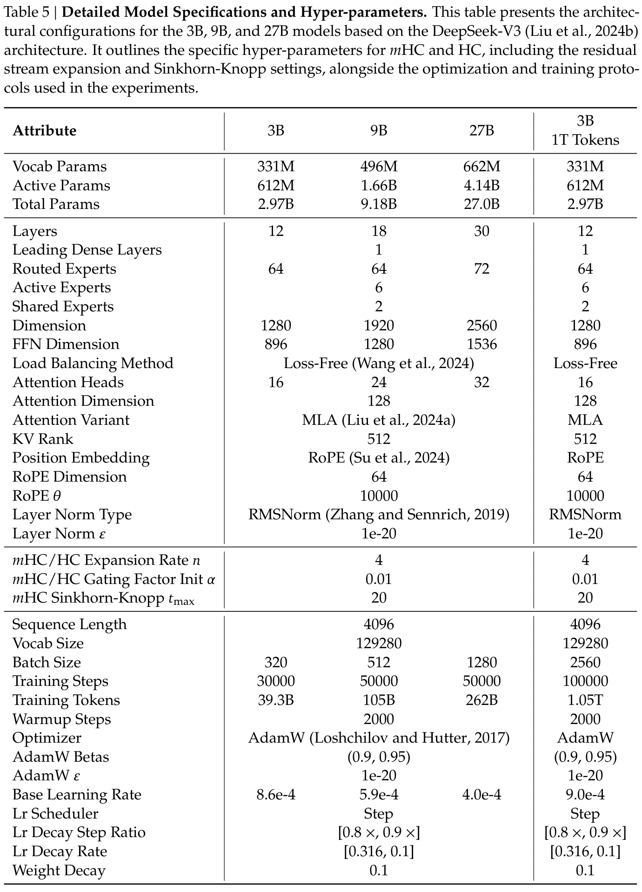